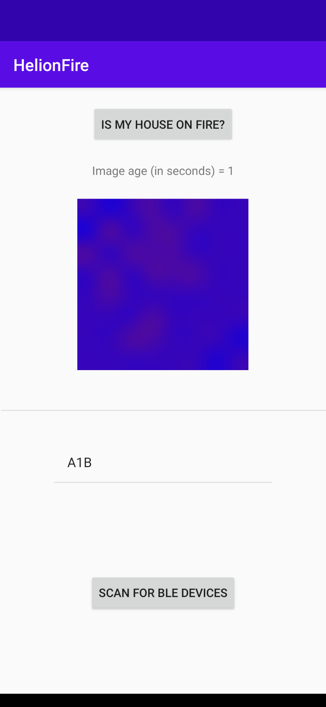
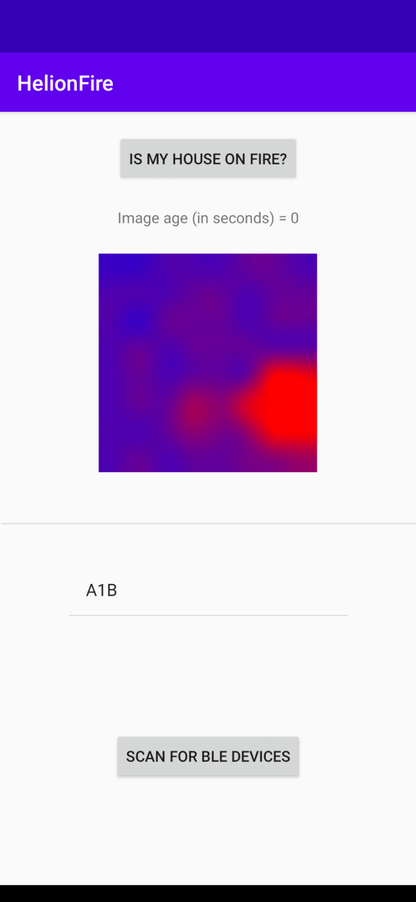
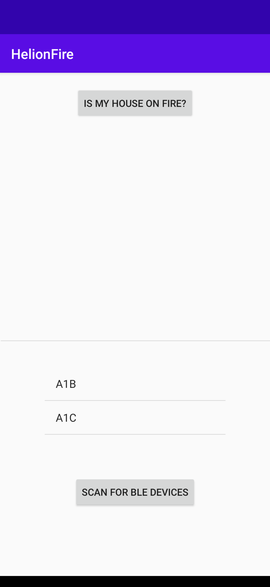
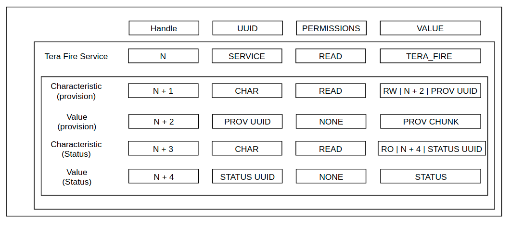
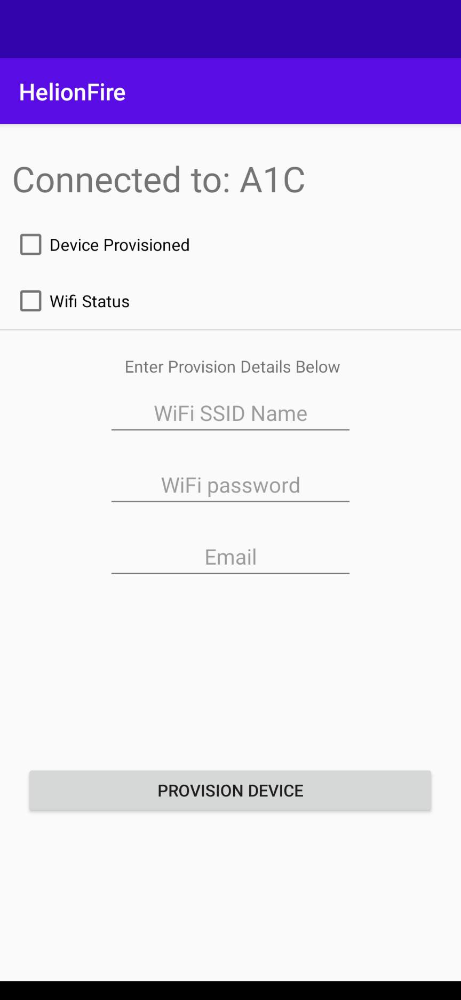
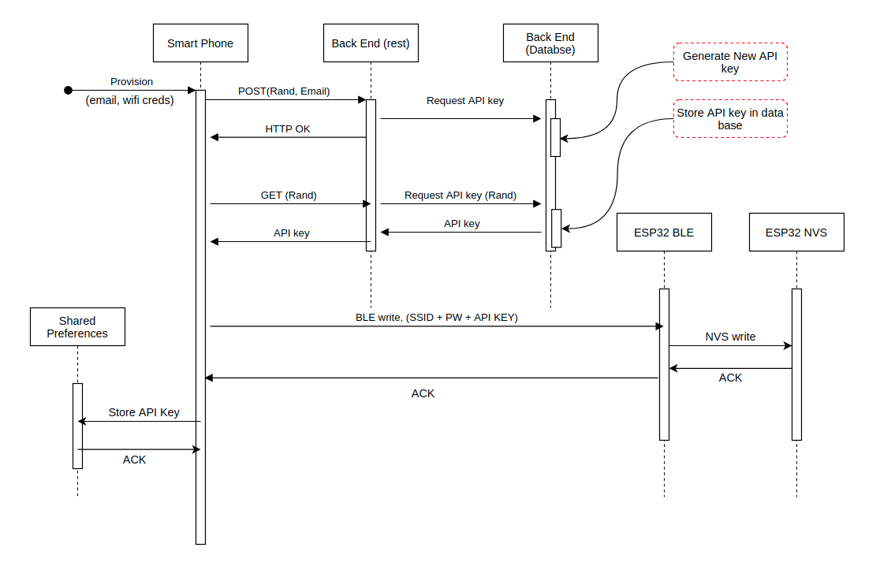
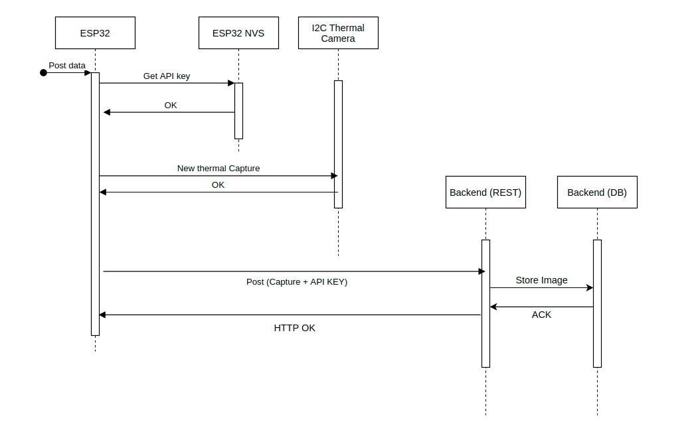
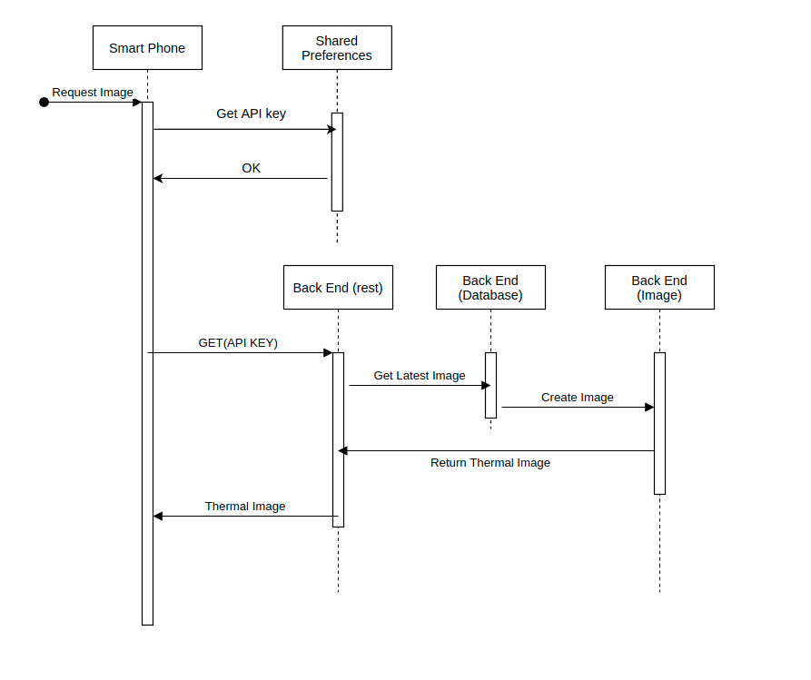
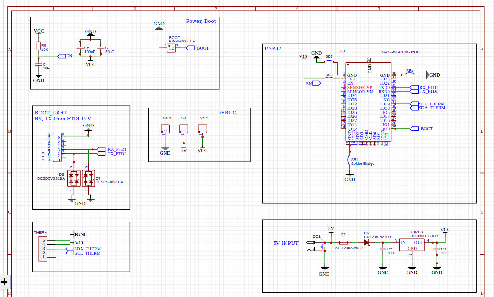

Did I leave the stove on?
Unfortunately, like most developers I find myself having an absent mind - I never know if I left the stove on when I leave my house. I decided to spend a few days creating a thermal IOT camera to solve this problem. Ideally the easiest way to approach this is to put a current transformer on the line feeding the stove, but given that my stove is heavy and I don't want to move it, I decided to use a cheap thermal camera mounted on top of my stove to get a real-time thermal image.
There are Four ingredients required to make this work
- ESP32
- AMG8831 (thermal camera)
- Golang backend
- Android app
From a top level, this brief guide explains how to make an Android APP that lets me see in real time what's happening on my stove via a thermal camera - from anywhere in the world - I want to do this as cheaply as possible, and I want to make it scalable.
Ideally we want to do as little provisioning at the factory as possible. Also, Ideally, we want the system to be "interrupt" driven. If I leave my house with the stove on - I want the system to inform me - I don't want to check. Since this is meant to be quick project - I decided to implement a reasonable provisioning system while ignoring the later issue and letting the user (me) poll to see if the stove is on.
Results
Thermal Image, Stove Off:
Thermal Image, Stove On:
BLE Scanning
Unfortunately, try as we might, we cannot completely avoid provisioning the device at the factory - however, we can minimize it. Imagine we have two different fire sensors in our house - how do we differentiate them? We have no choice, we need to imprint a serial key of some sorts in the devices memory at the factory. To this end, I took advantage of the Advertising Manufacturer Specific Data we can embed in the BLE advertising packet. The first two bytes of this field are fixed to a random (but known) value, the rest is a unique serial number. In the App, we will utilize this value to uniquely identify our devices(s).
For example, here I set up two devices, with the serials A1C and A1B, doing a BLE scan (and filtering for my Manufacturer ID), we get the following

Provisioning
First, what do we mean by provisioning the device? Essentially, using our phone (through BLE) we want to transfer WiFi and API-key credentials to the ESP32. Not doing this would mean we would have to either cook the credentials into the device or alternatively provide a keypad or some other interface on the device for the user to enter the API-key and the WiFi credentials, which is obviously bad design.
To quickly get this up and running, I leveraged the gatts_table_demo, which comes as part of the ESP-IDF

We can see that we expose a very simple GATTS table, with only 2 attribute values.
- Handle (N + 2), Provision chunk (wifi SSID name, wifi SSID password, API key)
- Handle (N + 4), Status (WiFI status, provision status)
Here Handle N+1 describes handle N+2, and likewise handle N+3 describes handle N+4. We will use the provision handle, using an app, to supply the ESP32 both the WiFi credentials and also an API key to use against the backend. In the esp FW, we want to make sure we set the flag in the table such that when the smartphone dose a BLE read/write we don't automatically respond, instead a callback will be generated with the appropriate handle value and we can chose what action we take, for example, when reading handle (N+4), we will check the WiFi status and also the NVS to see if we are already provisioned.
One thing to note is that we deliberately kept the GATT table small and give multiple meanings to each value. This somewhat complicates the code, however, it goes a long way to avoid the situation where the device has a valid SSID name, but is missing an API key, etc. We can insure wholesale provisioning of the device in this fashion. To stress this, after combining the three attributes, they are protected by a CRC. After doing this, they are written to the ESP32 through the PROVISION attribute (handle N+2). The ESP32 verifies the CRC before committing the values to NVS.
To track the status of the device, we will poll attribute with the handle N+4, this is the status attribute, it's only two bits. The first bit contains a flag if the device is provisioned, the second bit contains a flag if the device has connected to WiFi.

Once the user scans for and selects the device to provision, a new page shows up. Here, the user can enter the WiFi credentials as well as his or her email. This will kick off a process that ultimately ends in the device being provisioned.

For provisioning, the back end exposes two URIs, provision_start and provision_finalize. To leverage proper REST API usage, the provision sequence is broken up into two distinct actions. First, The smart-phone generates a random 32 character token and POSTs this to provision_start. This kicks off a process in the back-end in which a new API key is temporarily generated. If within the next 30 seconds a GET is made to the provision_finalize URI using the same token, the API key is finalized and stored in a database in the back-end and also returned to the smart phone.
The smart phone now uses BLE to transfer the:
- WiFi SSID (name)
- WiFi Password
- API-key

The ESP32 has fairly basic FW - it simply takes a thermal capture every few minutes and POSTs it to the cloud (backend). The data is sent as a raw binary.

To poll and request a new image, the smartphone first needs to fetch the API key stored in the shared preferences. Once it does this, it dispatches a GET request to the image creation URI on the back end. The back end goes and retrieves the latest thermal capture which is stored as raw data and generates an image using some very basic math, this image is returned to the phone which finally displays it.

The schematic is shown above - straight forward as can be.
Sources:
GitHub: Firmware + backendGitHub: Andriod App